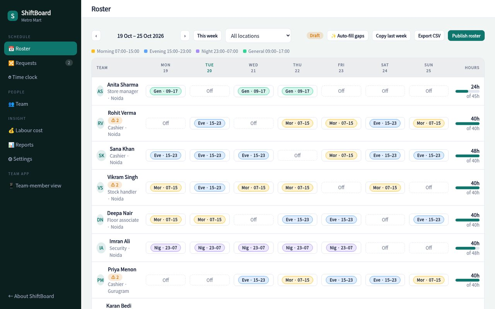
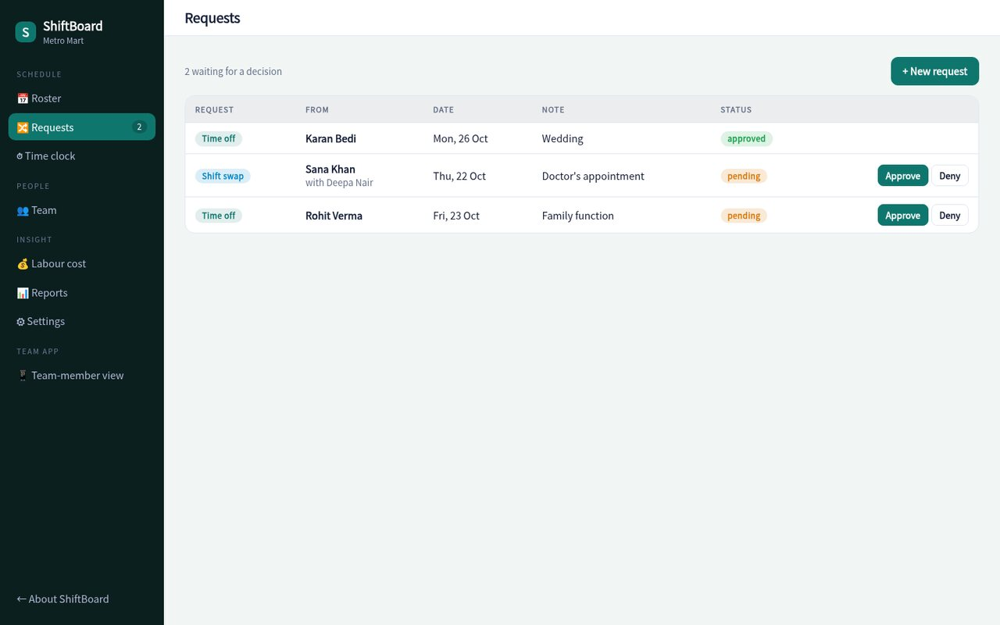
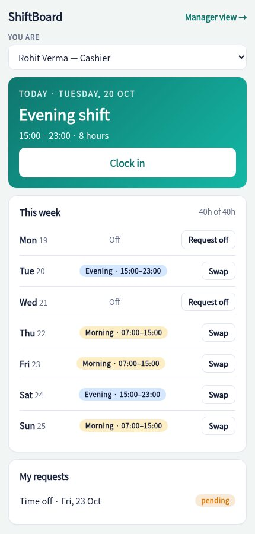
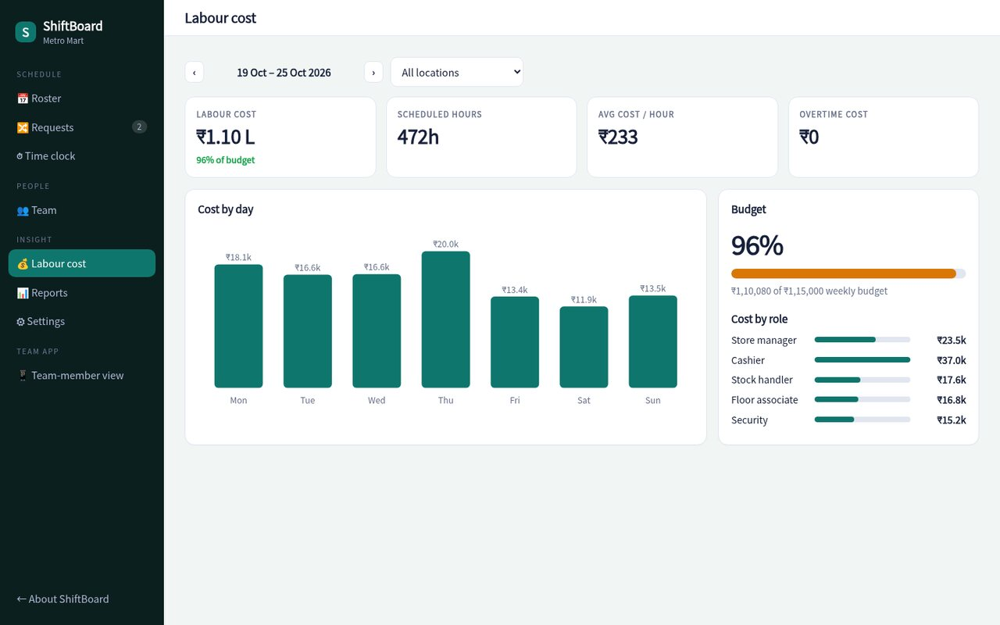

Drag in shifts, let ShiftBoard fill the gaps, and see who's short, who's in overtime and what the week will cost, before you publish.

Click any cell to assign a shift. Colour-coded shift types, hours per person and cover by shift.
One click assigns open shifts to available people with the fewest hours, respecting availability and leave.
Warnings for short rest between shifts, seven days in a row, unavailable staff and overtime, before they become problems.
Staff request leave or swap shifts from their phone. Approve with a tap and the roster updates itself.
Clock in and out, flag late arrivals and compare scheduled with worked hours. Export payroll-ready CSV.
Cost per day and per role against your weekly budget, with overtime priced at 1.5×.
Coverage rows turn red when a shift is short. Warnings call out who's tired, over-scheduled or on leave, so the roster you publish is the roster that works.

See your shifts, clock in, ask for time off or swap with a colleague. No WhatsApp groups, no screenshots of the roster.

Labour cost updates as you edit. See spend by day and role, how much is overtime and how close you are to budget.

Roles, pay rates, contracted hours and the shifts each person can work.
Copy last week, auto-fill the gaps and fix any warnings.
Staff are notified, clock in on the day, and you see actual hours against the plan.
Sample pricing for this concept build.
Yes, shifts can cross midnight, and the rest-between-shifts check understands them.
They request a swap from the staff view; you approve it in one tap and both rosters update.
Yes. Rename, recolour and retime shifts, and set the minimum staff required for each.
Hours above your weekly threshold (default 48) are costed at 1.5× the person's rate. Both are configurable.
The demo is fully working with a sample two-store team, try the auto-fill and watch the warnings.
Open the live demo